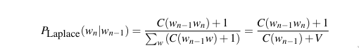

NLP Library
06.03.2022
1 Introduction
| Created by- | Supervised by |
|---|---|
| Abhijit Paul | Dr. Zerina Begum |
| 1201(60932) | Professor, IIT, DU |
1.1 About Project
Building a natural language programming library. Our project can be broken into 4 parts.
- Preprocessing corpus.
- Language Models and Smoothing.
- Noisy Channel Models.
- Application
Heap Management and Efficiency
2 Background Study
Our project covers three broad fields. We will discuss briefly about them one by one.
2.1 Language Modeling
The probablity of a phrase occuring can be described as:
\[P(w_1, w_2, ..., w_n)\]
Using chain rule of probablities, we get
\[ P(w_1....w_n) = P(w_1)P(w_2|w_1)P(w_3|w_1:2) . . . P(w_n|w_1:w_{n−1}) \]
\[ = \prod_{i=a}^{b} P(w_k|w_1:w_(k−1)) \]
Using Markov's[Ref] assumption, we can simplify this equation further.
Now implementing Bayesian formula, we can find p(wn|w1…wn-1).
Throughout our project, we use this formula on the core to find the ngram probablities.
2.2 Smoothing
The above formula of language modeling don't work for unseen words. Now a model should be able to predict unseen words to a certain extent, specially a language model. Because getting a sufficiently large dataset that covers all ngram is impossible. So smoothing is a necessity here.
2.2.1 Laplace Smoothing
Here, we discount the probablity of each ngram to use them for unseen ngrams.

Where V = the number of total word types in the vocabulary.
2.2.2 Kneeser Ney Smoothing
Its one of the most complex and sophisticated smoothing algorithm for smoothing. It considers both absolute discounting, novel continuation and lower order probablity to formulate a probablity. Thus its more accurate in practice.

C is count for highest order but continuation count for lower order.
2.3 Evaluation
Accuracy and similar matrices are not really relevant in NLP so we need a new matrix of evaluation. And that is - perplexity.
Where N is the number of words.
2.4 Noisy Channel Model
The noisy channel model was applied to the spelling correction task at about the same time by researchers at AT&T Bell Laboratories (Kernighan et al. 1990, Church and Gale 1991) and IBM Watson
Research (Mays et al., 1991).
If x is the correction and w is the typo, using bayesian rule, we get
Siimplifying it, we get-
3 Language Model
| Phase | Implementation |
|---|---|
| Sentence Segmentation | Decision Tree |
| Punctuation Handling | Hand Writtten Rules |
| Tokenizaton | Space Separated |
| Stemming | Porter's Algorithm |
3.1 Decision Tree
We also added:
- Abbreviation Checker using maximum matching algorithm
- Binary Search Tree to make searching and matching efficient
3.2 Porter's Algorithm
An algorithm for Suffix Stripping, M. F. Porter, 1980
A glimpse of porters algorithm:
Step 1a
SSES -> SS caresses -> caress
IES -> I ponies -> poni
ties -> ti
SS -> SS caress -> caress
S -> cats -> cat
Step 1b
(m>0) EED -> EE feed -> feed
agreed -> agree
(*v*) ED -> plastered -> plaster
bled -> bled
(*v*) ING -> motoring -> motor
sing -> sing
3.2.1 Simple Regex
We have developed a simple regex function to help with the porter's algorithm.
- *S (The stem ends with a letter. S={a-ZA-Z})
- v (The stem
containsa vowel) - *d (The stem ends with double consonants)
- *o (The stem ends in CVC wher the second C is not W,X or Y)
3.3 NGram
Using the bayesian formula, we first made a simple Bigram model. But it took a lot of time for each query. So instead, we decided to precompute everything.
3.3.1 Precomputation
- Make a set of all ngrams
- The set was handmade.
- Distinct elements
- Stores number of occurences of an element.
- Distinct elements
- Answer queries in O(logn) time.
3.4 Evaluation
Perplexity was our matrix for evalutation.
- Split the corpus in test and train dataset.
- Find perplexity for test dataset.
The lower the perplexity, the better the model.
4 Noisy Channel Model
4.1 Norvig's Spelling Error Collection
Wikipedia spelling errros:
raining: rainning, raning
writings: writtings
disparagingly: disparingly
yellow: yello
four: forer, fours, fuore, fore*5, for*4
woods: woodes
hanging: haing
aggression: agression
looking: loking, begining, luing, look*2, locking, lucking, louk, looing, lookin, liking
eligible: eligble, elegable, eligable
electricity: electrisity, electricty*2, electrizity
scold: schold, skold
adaptable: adabtable
caned: canned, cained
immature: imature
shouldn't: shoudln, shouldnt
swivel: swival
appropriation: apropriation
fur: furr, fer
stabbed: stabed
Southwold: Suothwode
disturb: distrebe, desturb
recollections: reclections, recolections
prize: prise, prizer
wednesday: wensday, wedensday
succession: sucession, sucesion, succesion
straight: strate, strait, staidght, stright*2
guardsmen: gards_men
incremented: increented
bacon: backen, baken
pulse: pluse
4.2 Generating Noisy Channel from Error Collection
- Load error collection
- Find Minimum Edit Distance backtrace for each error
- Increase deletion/insertion/transposition/substitution count for a given pair of character(w,t) appropriately
- Save the confusion matrix
4.3 Confusion Matrices
After the above step, we will get a similar confusion matrix.
4.4 KMP
The formula for finding noisy channel probablity has pattern-count in its denominator.
So we use a KMP algorithm to efficiently find pattern-occurence-count in the entire spelling error collection.
5 Kneeser Ney
This sophisticated algorithm implements all of the known smoothing techniques into one.
5.1 Absolute Discounting
The first part of the equation is essentially usual bayesian formula with absolute discouting d.
However, CKN is word count for highest order but continuation count for lower order.
5.2 Lambda Weighting
Here, we variably decide how much weight we should put on lower order probablities.
5.3 Lower Order Probablity

This part recursively finds probablity of lower order. Do note that,
- In each iteration, value of d changes so lambda value also changes.
- Meaning, we put different weight to lower order probablity in each stage.
5.4 Continuation
At lowest order, the recursive lower order probablity becomes continuation probablity.

5.5 Time Complexity
It requires a lot of time to execute as finding
- number of ngram it preceeds
- number of ngram that follows it
Requires a significant amount of time. However, once we precompute them, kneeser ney can be the best smoothing algorithm to use.
6 Challenges
6.1 Learning Curves
Understanding Kneeser Ney
The few resources available online are contradictory.
Finding materials
Corpus are huge and small corpuses are too skewed in one genre.
Natural Language Programming
Dan Jurafsky, Stanford
Some tools for memory checking, efficiency and debugging.
GDB, Valgrind, gprof
6.2 Heap Management
Program swallowing the whole Ram
With htop, we saw how the program slwoly swallows all of Ram and even HDD Ram file
Destructors alone don't work!
lvalue, rvalue
- Memory leak check in each module using valgrind.
Stack memory is limited!
stack overflow error occuers if we use STL functions
6.3 Time Complexity
- Default Implementation takes huge amount of time.
- Precomputation
- Binary Search Tree for O(logn) in each Query.
- gprof to check if any function is slowing down our program
6.4 Exotic C++ Philosophy
Syntax, Differences with java
- Rules of three
- Copy-and-Swap idiom
- Template
- lvalue-rvalue
7 What we plan to do in the future?
- Bag of Words
- Soundex Algorithm
They feel interesting so I might implement them into my NLP library in near future.
7.1 Project Structure

8 Thank You!
Lines of Code = 3598
[abhijit@hostabhi:~$ wc -l **/*.cpp **/*.h
156 Data-Structures/BinarySearchTree.cpp
467 Data-Structures/lib_string.cpp
82 Evaluation/Evaluation.cpp
126 KneeserNey/KneeserNey.cpp
138 LanguageModel/Bigram.cpp
100 LanguageModel/NGram.cpp
119 LanguageModel/PrecomputeNGram.cpp
63 NoisyChannelModel/ConfusionMatrix.cpp
180 NoisyChannelModel/DefineNoisyChannel.cpp
98 NoisyChannelModel/KMP.cpp
11 NoisyChannelModel/main.cpp
133 NoisyChannelModel/MED.cpp
203 NoisyChannelModel/NoisyChannelModel.cpp
112 Preprocess-data/lib_punctuation.cpp
207 Preprocess-data/SentenceSegmenter.cpp
238 Preprocess-data/Stemmer.cpp
80 Preprocess-data/Tokenizer.cpp
57 Spelling-Correction/Candidate.cpp
101 Spelling-Correction/SpellingCorrection.cpp
50 Data-Structures/BinarySearchTree.h
82 Data-Structures/lib_string.h
202 Data-Structures/OrderedSet.h
34 Evaluation/Evaluation.h
33 KneeserNey/KneeserNey.h
49 LanguageModel/Bigram.h
42 LanguageModel/NGram.h
40 LanguageModel/PrecomputeNGram.h
34 NoisyChannelModel/ConfusionMatrix.h
48 NoisyChannelModel/DefineNoisyChannel.h
25 NoisyChannelModel/KMP.h
47 NoisyChannelModel/MED.h
39 NoisyChannelModel/NoisyChannelModel.h
39 Preprocess-data/lib_punctuation.h
42 Preprocess-data/SentenceSegmenter.h
40 Preprocess-data/Stemmer.h
41 Preprocess-data/Tokenizer.h
40 Spelling-Correction/SpellingCorrection.h
3598 total